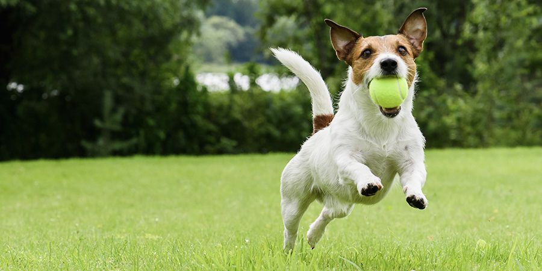

JUANITO

Juanito es un perrito muy juegueton y atento, lo rescatamos de un basurero estaba en muy mal estado pero con mucha paciencia, artos cuidados y mucho amor logró
recuperarse y ahora esta dispuesto a ser feliz con una nueva familia que lo ame, juanito tiene 2 años y es muy amoroso.
Nombre: Juanito
Sexo: Macho
Edad: 2 años
Raza: Greyhound
Esterilizado: SI
Nro Chip: 573842394829384